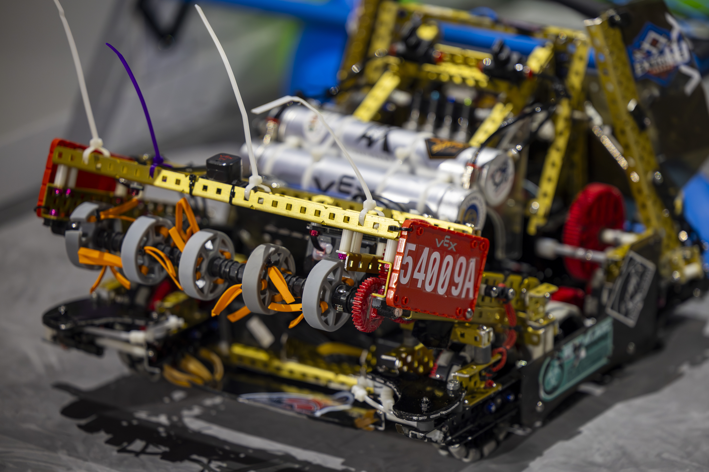
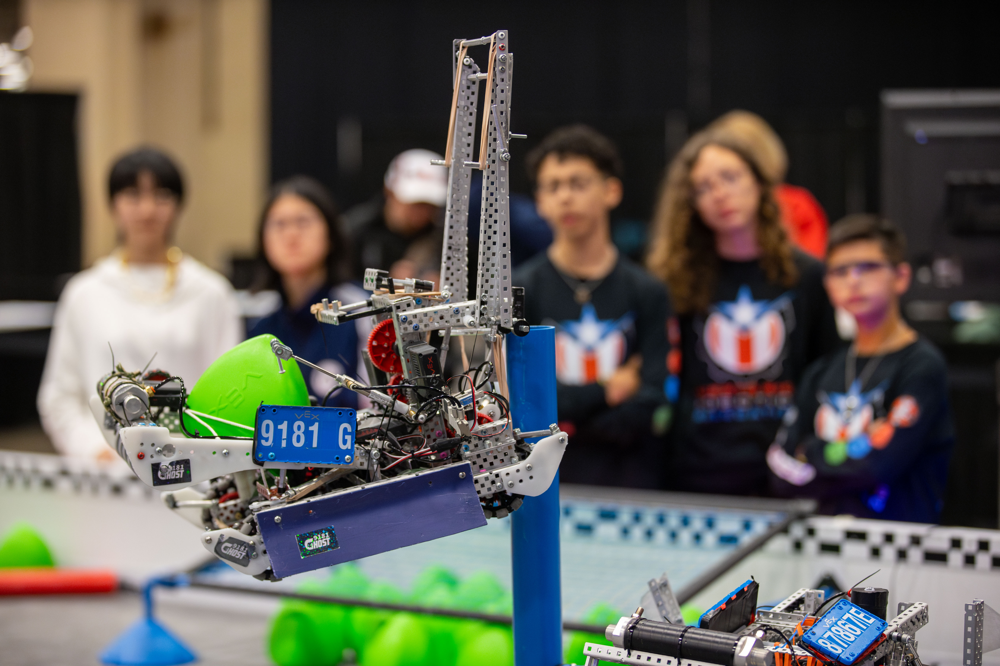
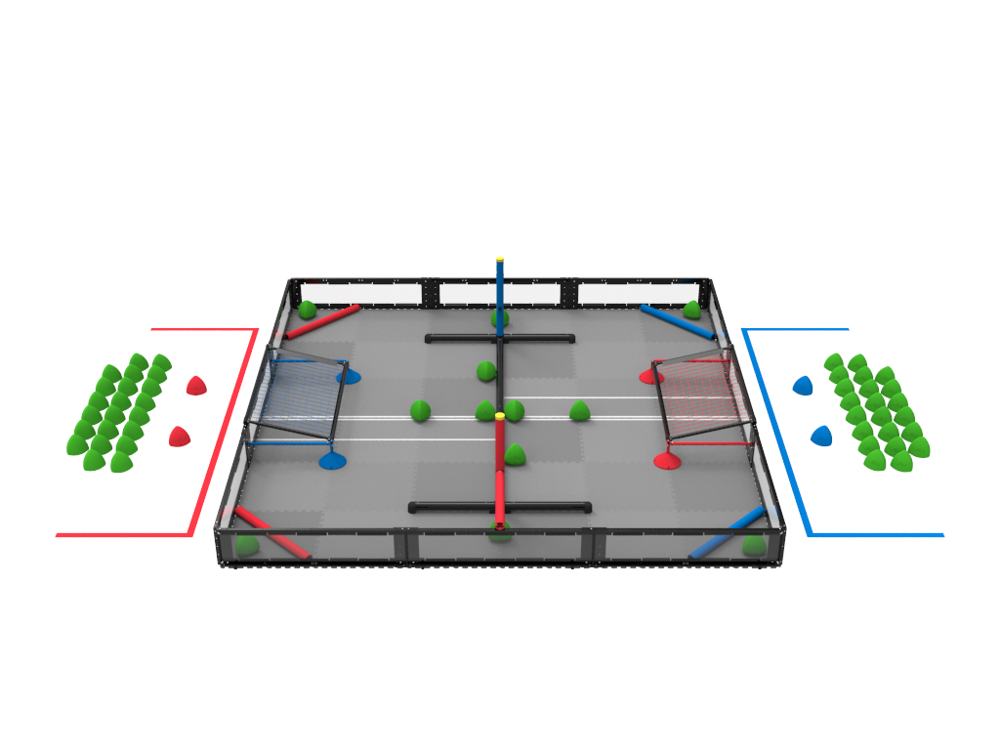
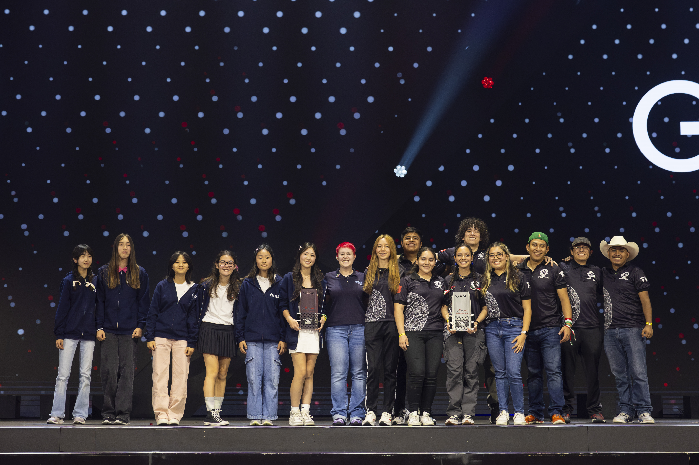

Intake

Escalador

Chassis
Intake
Escalador
Chassis
Competí junto con mi equipo en VEX Robotics Competition Over Under en la categoría VEX U, donde entregamos nuestro máximo esfuerzo en cada una de las tres competencias realizadas en Morelia, Chihuahua, y la mundial en Dallas, Texas. Esta experiencia fue enriquecedora y desafiante, pues cada competencia nos permitió poner a prueba nuestras habilidades en diseño, programación y trabajo en equipo.
Competencia internacional de robótica dirigida a estudiantes de nivel secundaria, preparatoria y universidad. Tiene como objetivo inspirar a los estudiantes en las áreas de ciencia, tecnología, ingeniería y matemáticas (STEM) a través de la creación y programación de robots para resolver desafíos específicos en un ambiente de competencia.
VEX Robotics es la competencia de robótica más grande del mundo, organizada por la Robotics Education & Competition (REC) Foundation. Asimismo, la competencia está dividido en categorías en las que se divide la VEX Robotics Competition, son variadas, adaptándose a diferentes niveles educativos y de experiencia. Estas categorías incluyen VEX IQ Challenge, dirigida a estudiantes de primaria y secundaria; VEX Robotics Competition (VRC), orientada a estudiantes de secundaria y preparatoria; y VEX U, destinada a estudiantes universitarios.

VEX IQ

VRC
VEX U
Las competencias se llevan a cabo en varias etapas, comenzando con eventos pre-nacionales, seguidos de competiciones nacionales, internacionales, y culminando en el campeonato mundial, donde los mejores equipos de todo el mundo se enfrentan para demostrar sus habilidades y creatividad en la robótica.
TORNEO INTERNACIONAL
CAMPEONATO NACIONAL
MUNDIAL
El desafío de "Over Under" se centra en un objeto llamado triball, que es de plástico y tiene forma de bellota con una dimensión principal de poco más de 6 pulgadas. El juego se desarrolla en un campo cuadrado de 12'x12' y enfrenta a dos alianzas, una "roja" y una "azul", cada una compuesta por dos equipos. Los partidos constan de un período autónomo de quince (15) segundos, seguido de un minuto y cuarenta y cinco segundos (1:45) controlados por el conductor.
"Presiona la imagen para conocer mas a detalle del juego"
El objetivo del juego es lograr una puntuación más alta que la alianza contraria, anotando triballs en goles y elevándose al final del partido.
Morelia, Michoacán, México:
Una de mis primeras competencias en robótica, donde demostré todas mis habilidades y utilicé los recursos a mi alcance. Me sentí asombrada al ver a niños de 11 años con habilidades y conocimientos impresionantes, mientras yo estaba apenas en una trayectoria de aprendizaje.


Chihuahua, Chihuahua, México:
Una competencia de mucho estrés, ya que fue el nacional. Dependía de nosotros ganar un pase al mundial para representar a mi universidad y a México a nivel internacional. Logramos quedar en cuarto lugar. Fue un proceso de aprendizaje significativo.


Dallas, Texas, Estados Unidos:
Del 28 al 30 de abril, todo el grupo Vórtex tuvo la oportunidad de participar en el mundial de robótica más grande del mundo, con más de 50 países invitados, entre ellos México. Fue un evento donde demostramos nuestras habilidades y capacidades en STEM. La experiencia adquirida nos permitió valorar y reflexionar sobre el proceso de crecimiento de cada miembro de Vortex. Esta trayectoria ha sido la base de nuestro crecimiento competitivo y mejora continua, impulsándonos hacia el éxito en futuras competencias.


Un reconocimiento que celebra nuestra dedicación a la equidad e igualdad en el área de STEM. Este premio subraya nuestro firme compromiso de apoyar a las mujeres en una industria tradicionalmente dominada por hombres. La inclusión de mujeres en nuestro equipo ha enriquecido nuestras perspectivas y habilidades, haciéndonos más competitivos. A través de la integración equitativa de todos los miembros, hemos enfrentado y superado diversos retos.
El uso de AutoCAD y Autodesk Fusion es esencial para el diseño del robot, la creación de planos, piezas, estructuras y mecanismos.
Utilización de herramientas para manufacturar y llevar a cabo el proceso de construcción del robot.
Aplicación de principios mecánicos en la construcción y construcción del robot.
Planificación y organización eficiente de recursos y tiempo.
Desarrollo de software para la fase autónoma y control manual del robot usando C++ y Python.
Colaboración y comunicación efectiva entre los miembros del equipo.
Capacidad para transmitir ideas y estrategias claramente.
Adaptación y superación de desafíos imprevistos.
Innovación en el diseño y estrategias de juego.
Implementación de nuevas ideas y tecnologías.
Mi nombre es Laura Cintora Cendejas quiero mencionar que a competencia fue desafiante pero increíblemente enriquecedora, y me brindó una oportunidad inigualable para crecer tanto personal como profesionalmente. Participar en un evento de esta magnitud me permitió desarrollar habilidades técnicas avanzadas en ingeniería y programación, así como mejorar mis capacidades de trabajo en equipo y resolución de problemas. Estoy profundamente agradecida por haber tenido la oportunidad de formar parte de una experiencia tan transformadora. Esta vivencia no solo me ha preparado mejor para futuros desafíos en el campo de la robótica, sino que también me ha inspirado a continuar explorando y superándome en este apasionante ámbito.